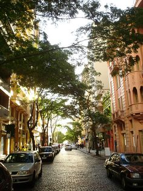
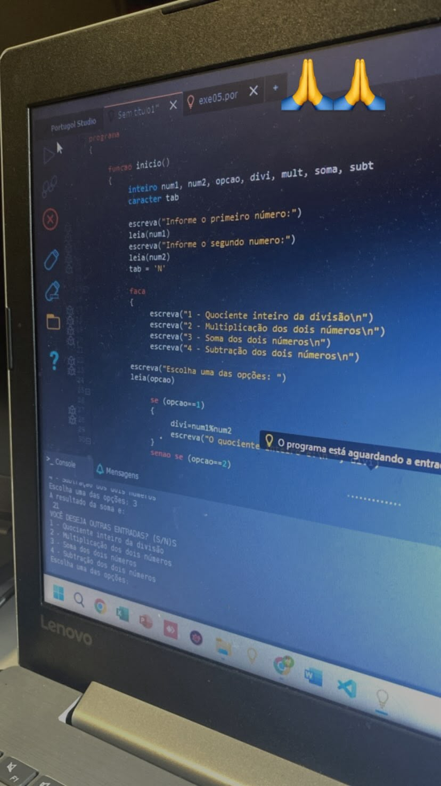
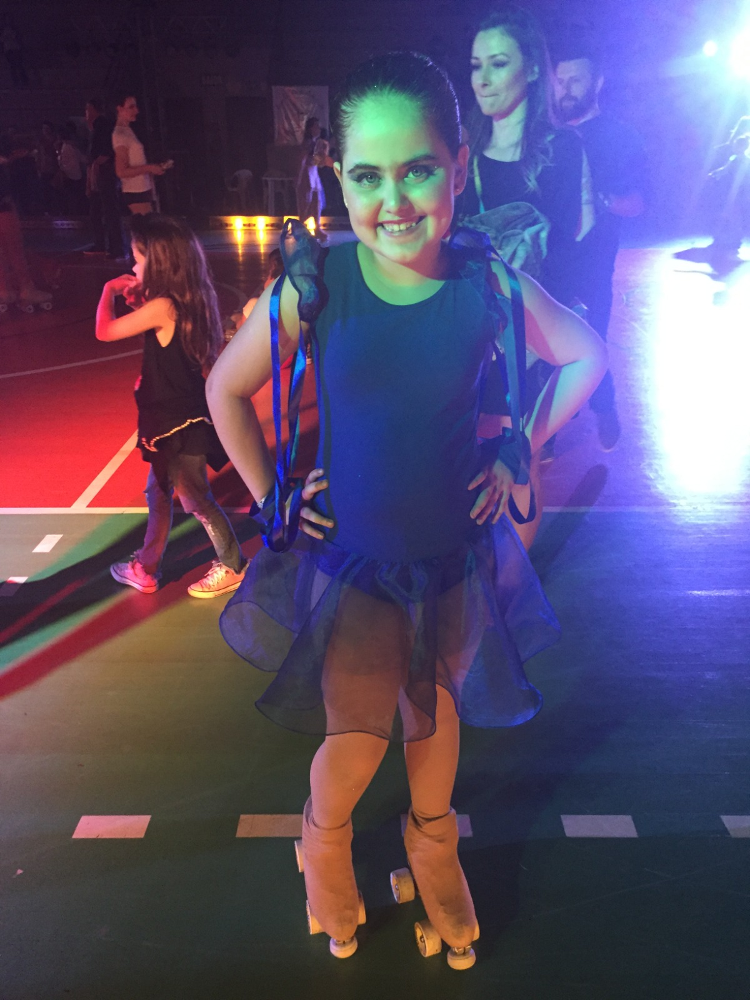
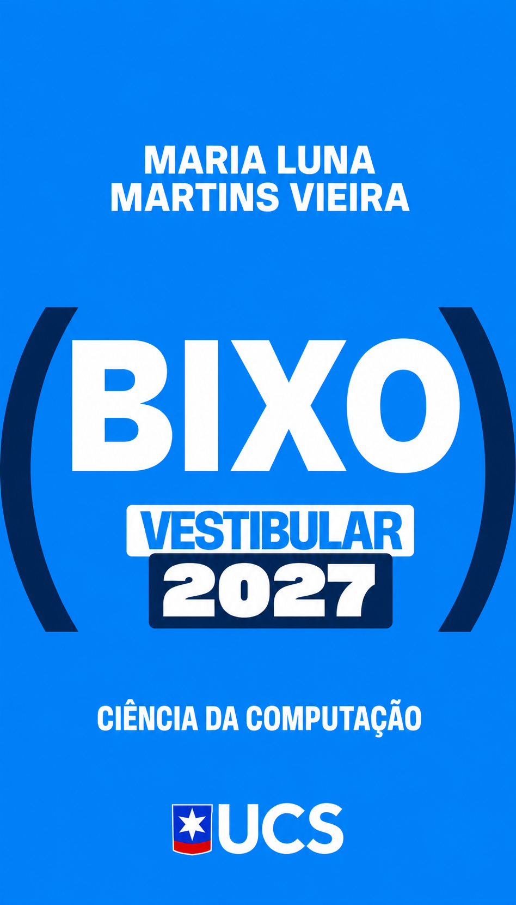
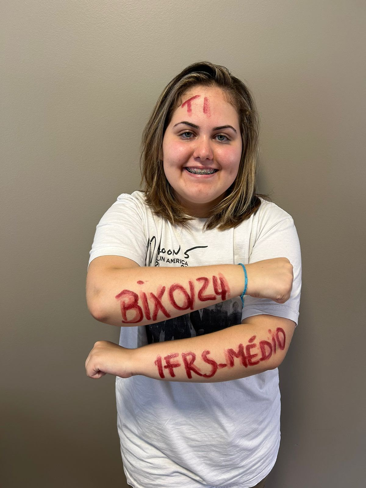

Quem Eu Sou?
Uma coisa que ninguém imagina sobre mim é que, apesar das inseguranças, tenho muitos sonhos e encontro forças para continuar tentando realizá-los
Sobre Mim
Sou natural de Porto Alegre, mas cresci e vivo em Nova Prata, cidade para onde me mudei com apenas um mês de vida. Apesar de ter poucas lembranças de Porto Alegre, tenho um carinho especial por ser minha cidade natal.
Nova Prata se tornou meu lar, um lugar tranquilo, onde construí minhas memórias e minha história. Minha família e a cidade me ensinaram o significado de pertencimento e a importância de valorizar minhas raízes.

Meus Hobbies
Fora da escola, gosto de explorar atividades criativas e desenvolver novas habilidades. Meus interesses incluem crochê, leitura, macramê e programação — unindo o trabalho manual com a lógica da tecnologia.

Um Desafio Superado
Um dos maiores desafios que já superei foi aprender a patinar. No começo, enfrentei dificuldades e precisei de bastante dedicação para conseguir evoluir.
Durante esse processo, aprendi que nem sempre as coisas acontecem facilmente, mas que a persistência faz toda a diferença. Essa experiência me ensinou a não desistir diante dos obstáculos e a valorizar cada pequena conquista.

Conquistas
Durante minha trajetória no IFRS, tive a oportunidade de viver experiências que vão além da sala de aula.
Uma das minhas conquistas especiais foi receber o prêmio de Música e o prêmio de Voto Popular no I Festiver do IFRS, momentos que representaram o reconhecimento do meu envolvimento com a arte e a música. Além disso, conquistei minha aprovação em Ciência da Computação na UCS, um passo muito importante para a realização dos meus objetivos acadêmicos e profissionais. São experiências que representam diferentes partes de quem sou: minha criatividade, minha paixão pela música e meu interesse pela tecnologia. Tenho orgulho de cada uma delas e de tudo que ainda quero conquistar.


IFRS e Meu Curso
Minha escolha pelo IFRS aconteceu quando tive a oportunidade de conhecer o espaço e percebi que era um ambiente interessante, inovador e com diversas possibilidades de aprendizado.
Escolhi o curso Técnico em Informática para Internet também por influência da minha prima, que é formada nessa área e se tornou uma inspiração para mim. Gostaria de seguir seus passos e construir meu próprio caminho no mundo da informática.